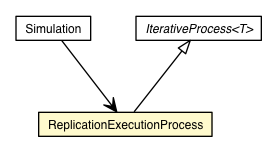

jsl.modeling
Class Simulation.ReplicationExecutionProcess

java.lang.Object
 jsl.modeling.IterativeProcess<Executive>
jsl.modeling.Simulation.ReplicationExecutionProcess
jsl.modeling.IterativeProcess<Executive>
jsl.modeling.Simulation.ReplicationExecutionProcess
- All Implemented Interfaces:
- IterativeProcessIfc, ObservableIfc, IdentityIfc
- Enclosing class:
- Simulation
protected class Simulation.ReplicationExecutionProcess
- extends IterativeProcess<Executive>
This class implements the IterativeProcess behavior for the Simulation
| Fields inherited from class jsl.modeling.IterativeProcess |
COMPLETED, COMPLETED_MSG, DEFAULT_MAX_EXECUTION_TIME, myBeginExecutionTime, myCreatedState, myCurrentStep, myDoneFlag, myEndedState, myEndExecutionTime, myEndingStateIndicator, myId, myInitFlag, myInitializedState, myIPLogReport, myMaxAllowedExecutionTime, myName, myObservableComponent, myRunningFlag, mySaveStepOption, myState, myStepCompletedState, myStepCounter, mySteps, myTBConsoleUpdates, myTimer, myTimerTask, STOPPED, STOPPED_MSG, TIMED_OUT, TIMED_OUT_MSG, UNFINISHED |
|
Method Summary |
protected void |
endIterations()
|
protected boolean |
hasNext()
This method should check to see if another step is necessary for the
iterative process. |
protected void |
initializeIterations()
|
protected Executive |
next()
This method should return the next step to be executed in the iterative
process or null if no more steps can be executed. |
protected void |
runStep()
This method tells the iterative process to execute the current step. |
| Methods inherited from class jsl.modeling.IterativeProcess |
addObserver, consoleOutput, contains, countObservers, deleteObserver, deleteObservers, end, end, getBeginExecutionTime, getCurrentStep, getElapsedExecutionTime, getEndExecutionTime, getEndingStateIndicator, getEndingStateIndicatorAsString, getId, getLogReport, getMaximumAllowedExecutionTime, getName, getNumberStepsCompleted, getSaveStepOption, getStepIterator, getStepList, getStoppingMessage, initialize, isCompleted, isDone, isEnded, isInitialized, isRunning, isStepCompleted, isStopped, isTimedOut, isUnfinished, run, runAll_, runNext_, runNext, setId, setMaximumExecutionTime, setName, setSaveStepOption, setState, toString, turnOffLogReport, turnOnLogReport, turnOnLogReport, turnOnTimer, turnOnTimer |
Simulation.ReplicationExecutionProcess
protected Simulation.ReplicationExecutionProcess()
initializeIterations
protected final void initializeIterations()
- Overrides:
initializeIterations in class IterativeProcess<Executive>
endIterations
protected final void endIterations()
- Overrides:
endIterations in class IterativeProcess<Executive>
hasNext
protected boolean hasNext()
- Description copied from class:
IterativeProcess
- This method should check to see if another step is necessary for the
iterative process. True means that the process has another step to be
executed. False, means that no more steps can be executed.
- Specified by:
hasNext in class IterativeProcess<Executive>
- Returns:
next
protected final Executive next()
- Description copied from class:
IterativeProcess
- This method should return the next step to be executed in the iterative
process or null if no more steps can be executed. It should advance the
current step to the next step if it is available
- Specified by:
next in class IterativeProcess<Executive>
- Returns:
runStep
protected final void runStep()
- Description copied from class:
IterativeProcess
- This method tells the iterative process to execute the current step.
Typical usage is to call this after calling next() to advance to the next
step.
- Specified by:
runStep in class IterativeProcess<Executive>
Copyright © 2012 Manuel D. Rossetti. All Rights Reserved.